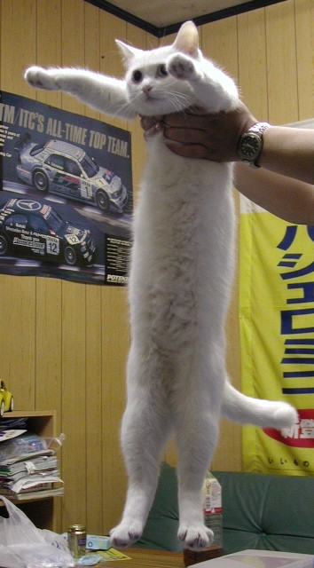

__ is based on a normal HTML document. You can scroll it, share it, print it, and read it on a mobile device.
Want to try it? Try pressing escape on the nearest keyboard. Then use the arrow keys.
When you share the URL it'll point to the current slide.
Just scroll down.
You can press escape again to go back to viewing this presentation as a normal webpage.